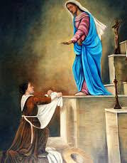
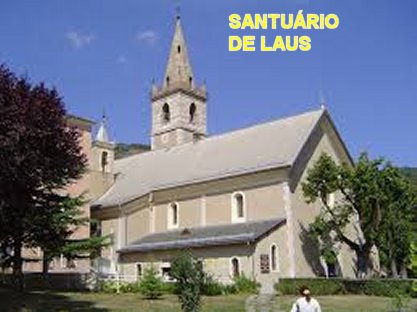

"O PARAÍSO ACOLHE A BOA ALMA"
CRUCIFICADA COM JESUS
Tudo o que aconteceu no vale
privilegiado de Laus teve como objetivo não só a conversão dos pecadores, mas
acima de tudo, para maior honra e glória de JESUS.
Cada aparição enchia a alma de Benedita de uma alegria inexprimível deixando-a fervorosa e repleta de um amor sempre crescente pelo SALVADOR. Como ela se consumia pelo fogo divino, buscou todos os meios e recursos, para agradar sempre o seu Amado NOSSO SENHOR.
Frequentemente a pequena pastora orava ao SENHOR suplicando, para que ela sentisse algum tormento da Divina Paixão. Entre 1669 e 1679, Benedita foi abençoada com cinco Aparições de JESUS, que se revelou em um estado de sofrimento. Numa sexta-feira de Julho de 1673, NOSSO SENHOR ensanguentado lhe disse: “Minha filha, mostro-ME neste estado para que participes das dores da MINHA Paixão”.
E esse desejo foi satisfeito inclusive com a impressão dos Estigmas e com a participação nas dores de JESUS CRUCIFICADO. Para um privilégio especial, no entanto, apenas as feridas nos pés eram visíveis.
Uma cruz foi erguida na entrada do Vale de Laus. Benedita sentiu uma atração especial para ir orar aos pés daquela cruz. Lá ela se comoveu com a lembrança dos sofrimentos de NOSSO SENHOR JESUS e chorou muito.
Noutra ocasião, em 1673, estando ela aos pés da cruz, JESUS disse-lhe: «Minha filha, faço-me ver neste estado para te fazer partilhar as dores da minha paixão». E a palavra Divina foi imediatamente realizada:"daquele dia em diante, todas as semanas, a partir de quinta-feira à noite até cerca das quatro da manhã de sábado, Benedita reviveu em sua cama, a crucificação de NOSSO SENHOR JESUS CRISTO.
LUTA COM O DEMÔNIO
 O demônio nos odeia porque
sabe que somos infinitamente amados por DEUS e MARIA. E esta é uma prova da
existência do diabo e do inferno, sobre os quais, no entanto, DEUS sempre
triunfa e salva todos aqueles que acreditam e tem fé, e cultiva uma sincera
amizade com o SENHOR DEUS.
O demônio nos odeia porque
sabe que somos infinitamente amados por DEUS e MARIA. E esta é uma prova da
existência do diabo e do inferno, sobre os quais, no entanto, DEUS sempre
triunfa e salva todos aqueles que acreditam e tem fé, e cultiva uma sincera
amizade com o SENHOR DEUS.
Para vencer as armadilhas do diabo, devemos recorrer com mais frequência a NOSSA SENHORA, aos Santos nossos amigos e àquele Anjo da Guarda, que DEUS nos deu como nosso guardião.
A guerra que o diabo travou no Santuário de Laus não tem paralelo na história dos outros Santuários. Não contente em atormentar a pobre Benedita de todas as maneiras, não conseguindo ridicularizar e difamar aquele lugar, os demônios arquitetaram outro plano: “enviar padres indignos para administrar o Santuário”.
Naquela época, havia muitos Padres e até Bispos que seguiam uma heresia perigosa: o “jansenismo”. E por esse motivo se propagou uma doutrina terrível, cheia de rigor e austeridade, que não apresentava DEUS como PAI, mas como um Mestre severo que exige sacrifícios para apaziguar Sua ira. Assim, os Padres enviados a Laus procuraram semear estes erros, ali mesmo onde NOSSA SENHORA tinha semeado o verdadeiro espírito de NOSSO SENHOR JESUS CRISTO, mostrando a sua caridade, doçura e misericórdia.
Benedita é tratada como uma visionária vulgar e incompetente, e as pessoas são dissuadidas de acreditar nela. Todavia, a VIRGEM MARIA lhe preveniu: "Os teus inimigos querem a enlouquecer, para que aconteça a ruína do Santuário". Mas, a MÃE DE DEUS completou: “Fique tranquila, EU estou com você”.
Eles pensam em colocá-la na prisão, em trancá-la em um mosteiro, mas não conseguem. Então, eles a proíbem de falar com padres e peregrinos, e Benedita humildemente não se rebela. Ela não pode mais entrar na igreja, exceto aos domingos e apenas para participar normalmente da missa como todos os frequentadores.
O AMOR PURIFICA AS ALMAS
No entanto, os milagres continuam a acontecer, mesmo que não sejam mais relatados pelos sacerdotes. A VIRGEM não abandona o seu Vale e diz a Benedita, em 1697: “Estes padres querem destruir o Santuário, mas não vão conseguir, porque nunca poderão impedir as pessoas de virem aqui”.
Em 1700 o Anjo da Guarda de
Benedita lhe disse: “Esta é uma
Obra Divina que sempre existirá. Esses padres irão embora um dia e Laus mudará de rosto.
O 
Por outro lado, Benedita tinha grande devoção pelas almas do Purgatório. Ela não esquecia os sofrimentos delas no abrasador fogo penitencial da Justiça Divina, por essa razão sempre oferecia seus sacrifícios, penitências e orações pela libertação delas. E muitas vezes, acontecia que as almas depois de liberadas para o Paraíso de DEUS, vinham para agradecê-la.
Uma noite, enquanto rezava o Rosário, ela viu uma alma olhando ansiosa e parecia que ela aguardava o fim das suas orações, com a certeza de ser liberada por elas! Na festa de todos os Santos e durante uma vigília pelos mortos, enquanto estava perto da cruz, ela viu uma procissão de almas, cada uma com uma vela na mão. Elas seguiam em direção a Laus cantando músicas sagradas. Então uma alma se separou do grupo e lhe disse: "Somos pecadores e pecadoras que acabamos de sair do Purgatório. Durante nossa vida viemos aqui para rezar com confiança e agora a MÃE DE DEUS nos liberta neste lindo dia. Venho aqui também lhe agradecer os seus méritos: as suas orações e os sacrifícios que abreviaram o nosso tempo. Antes de nos abrir as portas do Céu, NOSSA SENHORA nos leva a dar graças ao DEUS DA VIDA, no SEU Santuário no Laus”.
ZELO PELOS PECADORES
Uma noite, enquanto arrumava as toalhas do Altar na igreja, Benedita sentiu aquele maravilhoso perfume e imediatamente a VIRGEM lhe apareceu e disse: «Coragem, minha filha, desejaste tanto ME ver e EU queria provar a tua confiança em JESUS e em MIM. Os pecadores não escutam o que tu falas de MIM; não se preocupe tanto a ponto de adoecer. Faça o que puder para ajudá-los. O MEU FILHO veio ao mundo para salvar todas as pessoas, mas nem todos querem aproveitar as SUAS Graças...”
Benedita, cumprindo a sua tarefa de conduzir os pecadores à conversão, também lhes sugere os remédios contra as paixões e dá conselhos para que eles não caiam no erro. Em geral, convida à oração, à mortificação, a se aproximarem da confissão e da comunhão, assim como fugir das ocasiões de pecar.
Além disso, NOSSA SENHORA infundiu no coração de Benedita a SUA própria predileção pelos Sacerdotes fiéis. Por essa razão, também a vidente do Laus rezava sempre de uma maneira toda particular, suplicando a DEUS e a NOSSA SENHORA, uma especial proteção para todos os Sacerdotes.
A PURIFICAÇÃO FINAL - FALECIMENTO
Mas no último período da sua vida uma dor tornou-se mais aguda nela: ela já não via mais a sua terna e tão querida MÃE SANTÍSSIMA, como via antes, agora se sentia como estivesse abandonada. Satanás aproveitando a oportunidade a tentou dizendo: "ELA abandonou você! Agora não poderá mais recorrer a ELA!" Mas Benedita lutou e respondeu com fé: "Antes morrer mil vezes abandonada por NOSSA SENHORA, do que propositalmente abandoná-la um só momento!".
A seguir, aos poucos,
ela permaneceu na cama, a saúde já estava precisando de cuidados. O seu Anjo da
Guarda lhe revelou que ela morreria na festa dos Santos 
REFÚGIO DOS PECADORES
Hoje o Santuário de Laus está a cargo do Clero Diocesano, com a assistência de uma Comunidade de Irmãos de São João, que tem o principal objetivo pastoral de oferecer o Sacramento da Reconciliação (a Sagrada Confissão).
As Aparições da SANTÍSSIMA VIRGEM MARIA em Saint–Étienne–Le–Laus ocorridas nos anos de 1664 a 1718, foram aprovadas oficialmente. No dia 5 de Maio de 2008, a autoridade religiosa Dom Jean-Michel de Falco Leandri, Bispo de Gap, anunciou o reconhecimento das Aparições pela SANTA SÉ, com o nome de “NOSSA SENHORA DE LAUS" (Refúgio dos Pecadores).